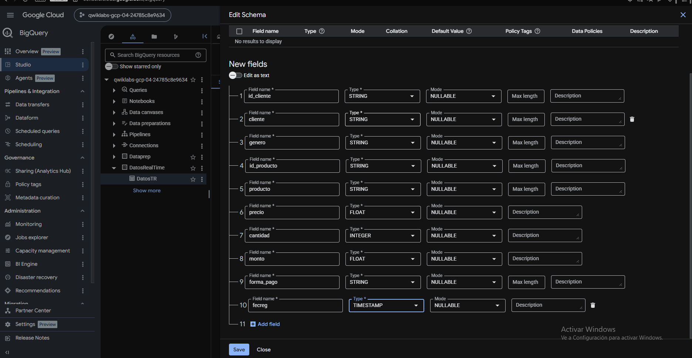
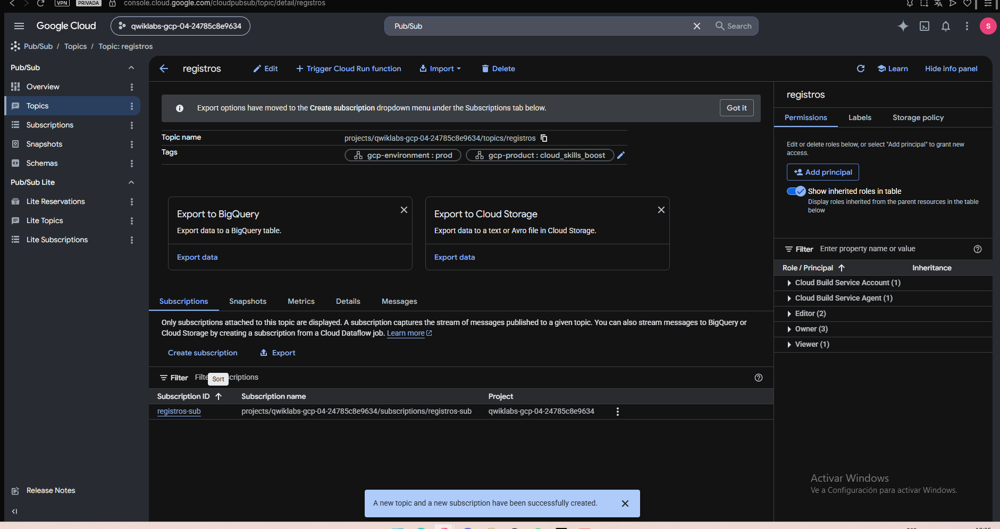
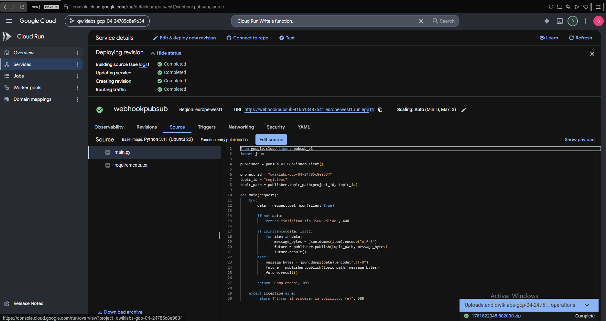
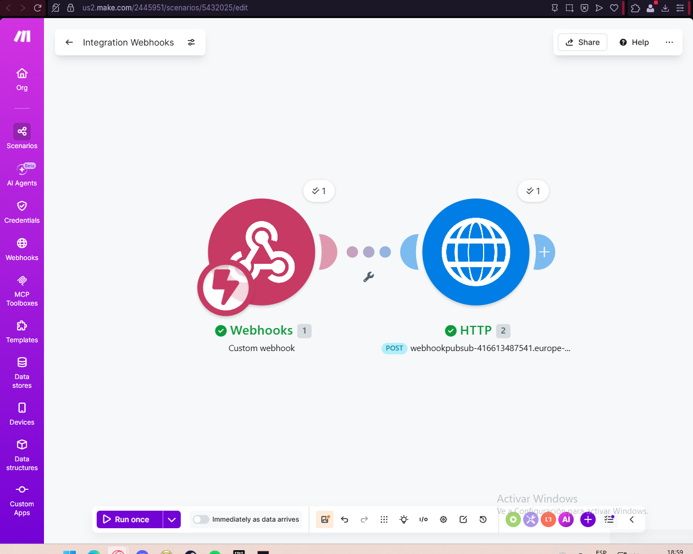
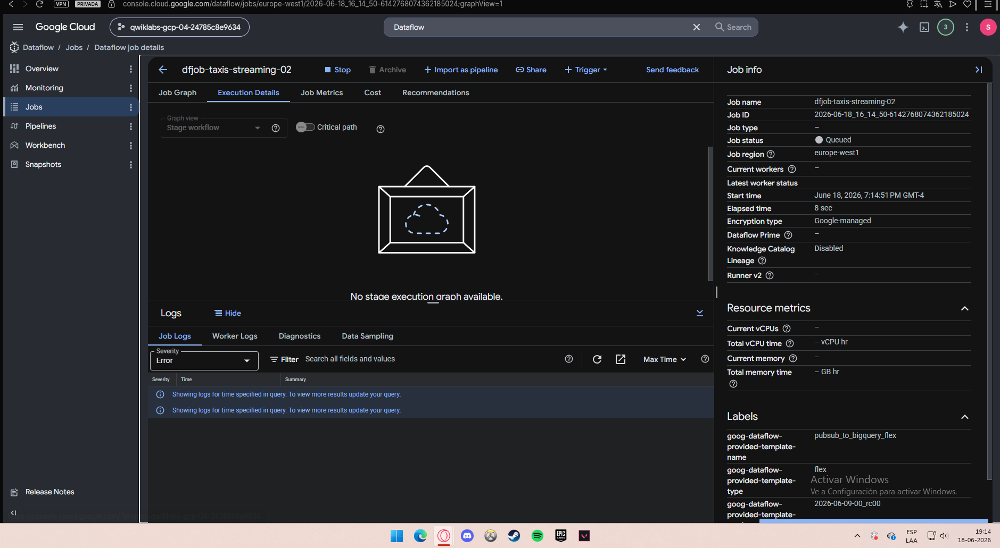
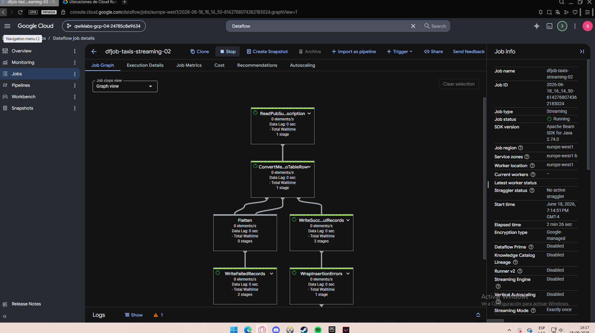
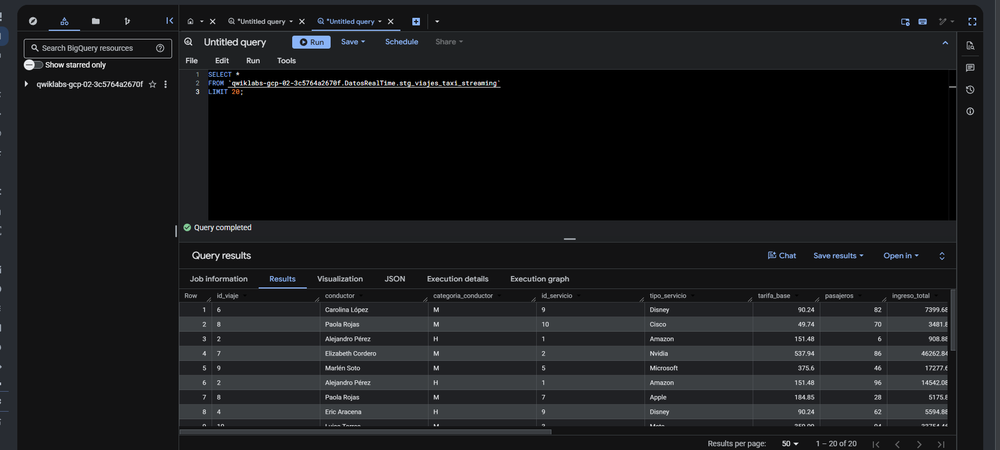
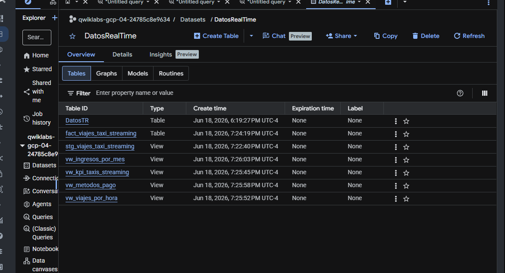
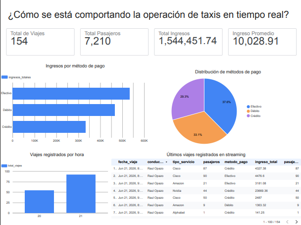

×
Del histórico masivo al tiempo real. Un pipeline batch en AWS que procesa seis años de viajes de taxi de Nueva York, y un pipeline streaming en GCP event-driven que monitorea la operación al instante — unificados en un panel en vivo.
El transporte urbano genera datos con las tres V: volumen (miles de millones de viajes), velocidad (eventos que llegan segundo a segundo) y variedad (Parquet, JSON, API externas). Ninguna base de datos tradicional resuelve ambos frentes — se necesita una arquitectura Big Data.
Analizar el pasado. Seis años de viajes de taxi de NYC para entender cómo la pandemia reconfiguró de forma permanente el transporte de la ciudad.
| Pregunta | ¿Qué pasó con el transporte tras el COVID? |
| Naturaleza | Grandes volúmenes, procesamiento por lotes |
| Fuente | NYC TLC Trip Record Data (Parquet) |
Monitorear el presente. Eventos de viajes que llegan desde una API externa y deben procesarse, almacenarse y visualizarse en segundos.
| Pregunta | ¿Cómo se comporta la operación ahora mismo? |
| Naturaleza | Eventos continuos, baja latencia |
| Fuente | API Duoc → Webhook (JSON) |
Capturas reales del desarrollo en Google Cloud. Haz clic en cualquiera para ampliarla.









Serverless de extremo a extremo. La rama batch corre en AWS y la rama streaming en GCP; ambas convergen en un panel en vivo hospedado en EC2. Todo administrado, sin clústeres.
Multicloud por diseño. Cada nube aporta lo que mejor resuelve: AWS para el análisis masivo del histórico, GCP para la ingesta de eventos en tiempo real.
| Servicio | Rol en la solución |
|---|---|
| Amazon S3 | Data Lake raw → curated |
| Amazon Athena | Consultas SQL serverless |
| IAM | Permisos y roles |
| AWS CLI | Ingesta automatizada |
| On-premise | Equivale en cloud |
|---|---|
| Hadoop (HDFS) | S3 / Cloud Storage |
| Apache Spark | Dataflow / Dataprep |
| Cassandra / HBase | BigQuery |
| MongoDB | Firestore |
Cloud elegida: AWS + GCP — escalabilidad elástica y pago por uso frente al costo de clústeres on-premise.
| Servicio | Rol en la solución |
|---|---|
| Make + Cloud Run | Ingesta de eventos desde la API |
| Pub/Sub | Cola, desacople productor-consumidor |
| Dataflow | Procesamiento streaming (Apache Beam) |
| BigQuery | Data Warehouse + vistas analíticas |
| Looker Studio | Panel de control interactivo |
Ingesta masiva desde el CDN oficial hacia el Data Lake en S3, seis transformaciones en capas Bronze → Silver → Gold, y consulta con Athena. El histórico revela el hallazgo clave.
| Dataset | Archivos | Registros |
|---|---|---|
| Yellow | 72 | 259 M |
| HVFHV | 71 | 1.237 M |
| Total | 143 · 33 GB | 1.496 M |
Formatos (IL 2.1): Parquet · CSV · JSON · Fuentes: Yellow + HVFHV
6 transformaciones (IL 2.3): normalización · limpieza · enriquecimiento · agregación · validación · deduplicación
Cada evento de viaje viaja desde la API hasta BigQuery sin acoplar componentes. Pub/Sub actúa como amortiguador y Dataflow procesa en continuo.
| Normalización | JSON → esquema DatosTR |
| Validación | Tipos: STRING/FLOAT/INT/TIMESTAMP |
| Enriquecimiento | hora del viaje derivada de fecreg |
| Reinterpretación | vistas SQL → dominio "viajes de taxi" |
DatosTR | Tabla cruda del stream |
stg_viajes_taxi_streaming | Staging renombrado |
fact_viajes_taxi_streaming_vw | Vista final del dashboard |
Todo proceso tiene puntos de fallo. Documentamos los controles del anexo exigido por la rúbrica y los errores reales resueltos durante el desarrollo.
| 1 · Calidad del dato | Validación, deduplicación y esquema tipado en cada capa |
| 2 · Seguridad y privacidad | IAM con roles mínimos; datos aislados vía Pub/Sub |
| Creación / Captura | API→Webhook · CDN→S3 |
| Almacenamiento | Data Lake S3 + BigQuery |
| Archivado | Capas raw → curated (lifecycle) |
| Eliminación | Política de retención / borrado |
| Errores | Payload validado en Cloud Run (400 si vacío); logs de Dataflow |
| Duplicidad | ROW_NUMBER() idempotente · clave de evento |
| Trazabilidad | Origen → vista final, auditada |
| Registros leídos → cargados | 1.496 M → ~1.470 M |
| Descartados (nulos / rangos inválidos) | ≈ 1–2% |
Dashboard en Looker Studio (vista final de BigQuery) y panel en vivo en http://13.222.133.144, que se actualiza cada 3 s
Una sola plataforma Big Data que resuelve el histórico y el tiempo real, con evidencias trazables.
Examen_transversal/
├── batch/ Pipeline NYC Taxi (AWS)
│ ├── ingesta.sh 143 Parquet → S3
│ └── athena.sql Consultas + vistas
├── streaming/ Pipeline tiempo real (GCP)
│ ├── cloud_run/ main.py (publisher)
│ ├── make/ Escenario Webhook+HTTP
│ └── vistas_sql/ stg_ / fact_ views
├── panel_ec2/ Astro SSR + Nginx (live)
├── dashboards/ Looker Studio
└── anexo_evidencias/ Capturas + errores